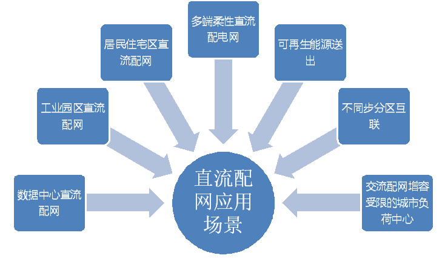
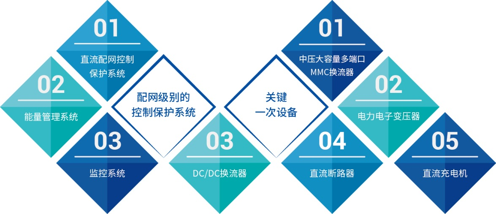
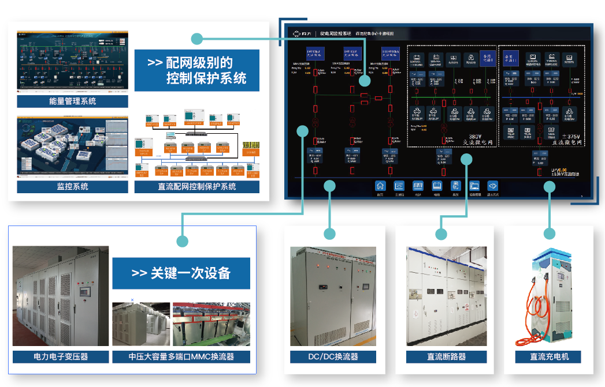
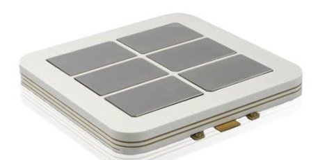
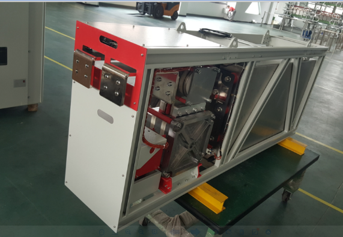

直流配电网柔性换流器
基于柔性直流技术的直流配电网具有供电容量大、线路损耗小、电能质量高、无需无功补偿、有利于新能源和储能装置接入等优点，逐渐成为适应现代城市发展规划和能源互联网发展的关键技术之一。

直流配电网典型应用场景
换流阀作为直流配电网物理层的核心设备，可实现交直流能量变换，有功无功功率快速支撑，潮流快速转移等功能，为应用层的灵活调度提供了坚实基础，是直流配电网与传统电网交互的关键环节，其能否可靠、稳定运行决定了整个系统的性能。


灵活高效供电、可靠故障应对能力是构建现代直流配电网的基础。四方公司研制了半桥型（配合直流断路器）、钳位子模块型及全半桥混合型等多种拓扑方案的MMC换流阀，可满足交流侧快速并离网切换、直流侧故障快速阻断及穿越的应用需求。
针对直流配电网运行需求的不同，四方公司研制了适用于不同功能需求的多种MMC换流阀，在近年来取得了如下业绩：
2018年——广东佛山“智能配电柔性多状态开关关键技术装备研发及示范应用”，提供±10kV/6MVA/6MVA/6MVA三端MMC换流器及其控制保护系统。
2018年——广东珠海“互联网+”智慧能源示范工程，提供±10kV/10MVA MMC换流阀及多端直流配电网全套控制保护系统。
2017年——贵州省、南方电网重点科技项目，城市配电网柔性互联关键设备及技术研究，四方公司总包本项目，提供包括四端MMC换流器、电力电子变压器、储能光伏换流器、直流充电桩、直流中心控制保护系统、交直流微电网控制保护系统、能量管理系统等全部产品。
2017年：国家重点研发计划，交直流混合的分布式可再生能源关键技术、核心装备和工程示范研究，提供多种分布式可再生能源互补优化运行控制技术。
2016年：国家重点研发计划，大型光伏电站直流升压汇集接入关键技术及设备研制，提供±35kV/5MVA MMC换流阀及其控制保护系统。
2015年：国家863计划，直流配电网中多端柔性直流系统控制保护关键技术，提供直流配网控制保护系统。
2012年：国家863计划，油田群智能配网综合集成与示范，提供±5kV/500kVA双端柔性直流输电换流站。
在上述项目中四方研制多种拓扑、容量、功能的MMC换流阀并在现场成功应用。


配置方案
抽能高压并联电抗器有改善电力系统无功功率有关运行工况的多种功能，在系统中的作用如下：
- 为高压开关站提供站用电源。
- 削弱容升效应，降低工频电压升高，降低操作过电压。
- 改善沿线电压分布和轻载线路中的无功分布并降低线损
- 有利于消除发电机带空载长线出现的自励磁现象
- 减少潜供电流，加速故障处电弧熄灭，提高线路自动重合闸的成功率
- 节约低压无功补偿设备的投资
特点和优势
1）首次提出了具有抽能侧区内外故障识别功能的容错复判自适应匝间保护，可准确快速识别抽能侧区外故障扰动，解决了电抗器增加抽能绕组后原电抗器匝间保护面临的技术难题。
2）首次提出了具有K值闭锁功能的抽能绕组匝间保护，通过构建高压侧零序电压与抽能绕组零序电流的比值关系K值，解决了抽能高压并联电抗器高压绕组与抽能绕组弱耦合带来的抽能绕组匝间故障保护的难题。
3）首次提出了不受系统侧扰动影响的抽能侧转角过流保护和不转角过流保护，可适用于抽能绕组角接及星接及不同钟点数的抽能高压并联电抗器。
工程应用
四方公司的超高压抽能高抗保护装置已经在国内多个项目中得到应用，涉及藏中联网、中国-老挝联网及南方主网和海南电网联网等重大项目的实施。设备运行可靠，得到了用户的一致好评。

表1 四方公司超高压抽能高抗保护装置的国内运行业绩情况
★创新铸就四方，梦想点亮未来★
★Innovation Lights Our Future★
四方股份为您提供优质的解决方案